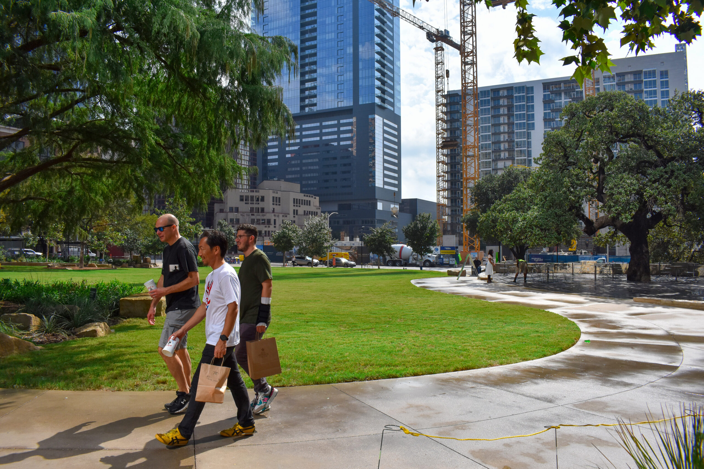

Noise, crossings, lighting, and block-level safety.
Residents need a way to name what is happening without turning every problem into a full-time project.
Public Safety
Downtown should be lively. It should also feel good to live in. DANA works with neighbors and city leaders to protect both.

Daily Life Downtown
Lighting, crossings, sound, sidewalks, and park activity all affect whether downtown feels welcoming for residents.
Resident Resource
Residents need a way to name what is happening without turning every problem into a full-time project.
DANA helps translate recurring concerns into practical next steps with city staff and neighborhood partners.
The goal is shared accountability: a downtown that works for people visiting, working, and living here.
Public safety remains an active DANA priority across meetings, member notes, and issue tracking.
Music, restaurants, visitors, offices, and homes all belong downtown. DANA pushes for the balance: businesses can thrive, and residents can still sleep.
Whether you walk, roll, bike, drive, or take transit, downtown streets should feel safe and easy to use.
The most common complaint we hear is simple: the bass is too loud, too late. Live music matters. So does sleep.